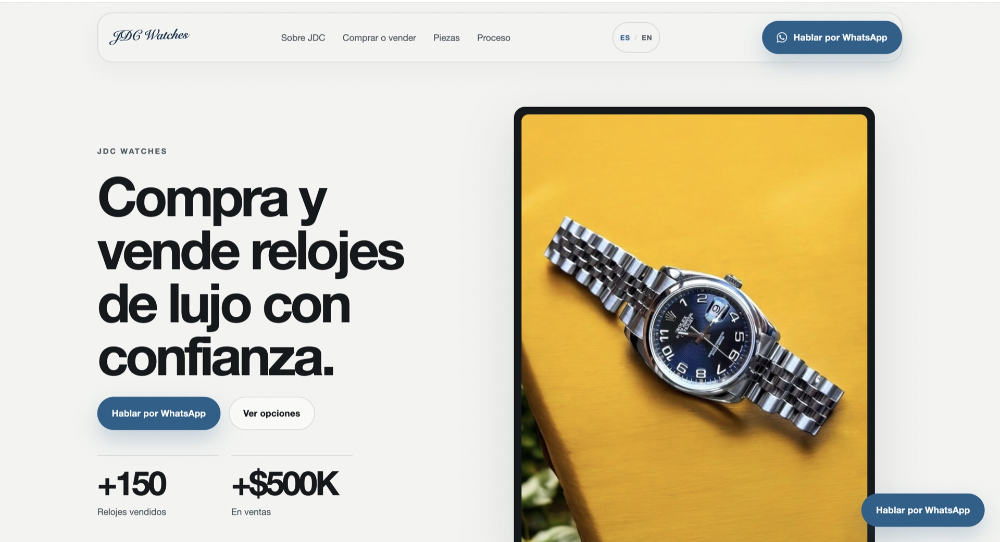
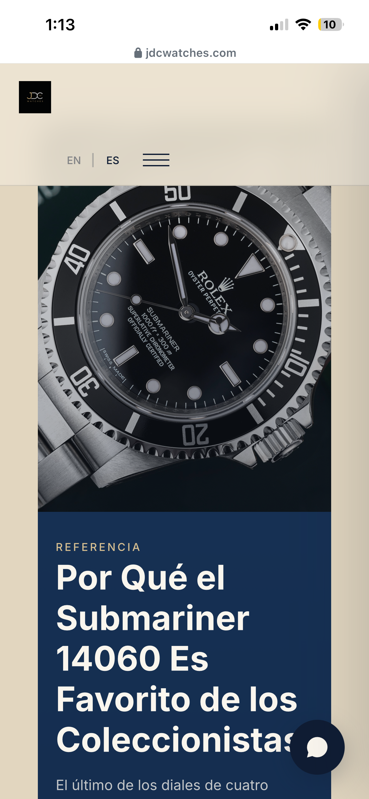
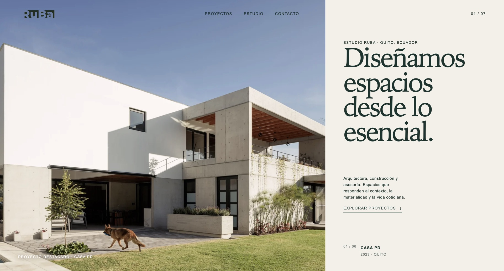
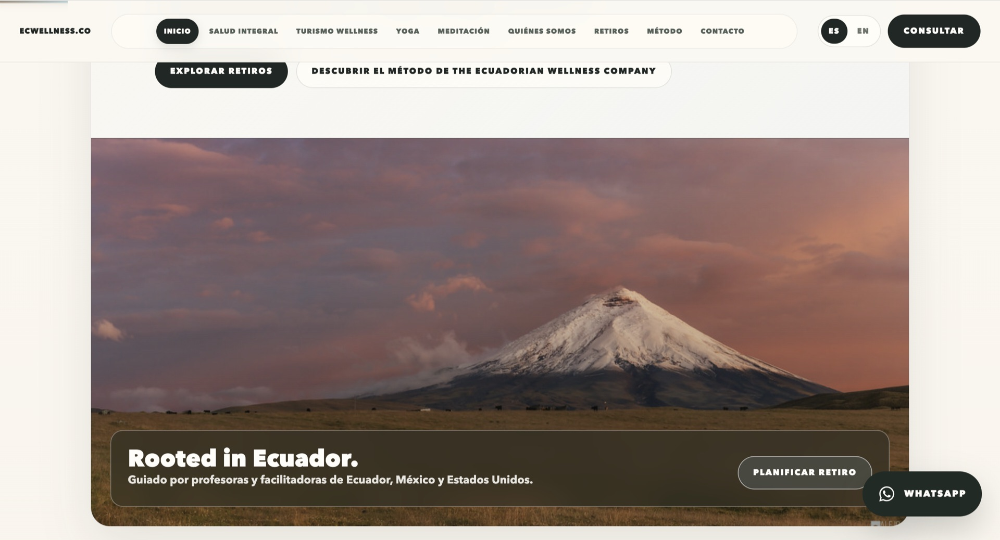
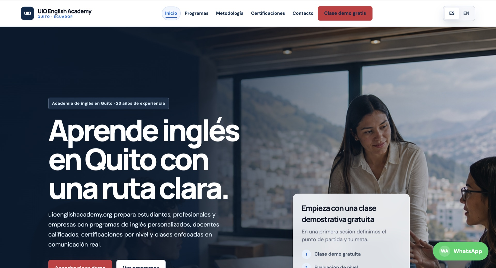

Claridad
Una propuesta que se entiende sin esfuerzo.
Diseño web estratégico. Quito, Ecuador.
Diseñamos experiencias digitales para empresas que quieren verse mejor, comunicar con claridad y convertir visitas en oportunidades reales.


Diseño directo con José Guerrero
Sin intermediarios
Desarrollo a medida
Por qué importa
La percepción empieza antes de la primera llamada. Una web clara, rápida y bien diseñada transmite confianza antes de que el cliente hable contigo.
Una propuesta que se entiende sin esfuerzo.
Una imagen digital acorde al nivel real de tu empresa.
Un camino directo desde el interés hasta la conversación.
Proyectos seleccionados
Ecommerce. Luxury. UX/UI.
Una experiencia digital construida alrededor del producto, donde cada reloj recibe el protagonismo que merece.
Visitar sitioArquitectura. Construcción. Asesoría.
Una portada que deja que la arquitectura, la materialidad y el contexto sean el primer argumento de la marca.
Visitar sitio

Wellness. Turismo. Retiros.
Una portada de marca donde el paisaje ecuatoriano da contexto inmediato a una propuesta de bienestar y retiros.
Visitar sitioEducación. Academia. Conversión.
Una presentación clara de la academia, sus programas y la invitación directa a iniciar una clase demostrativa.
Visitar sitio
Soluciones
Para negocios que necesitan una entrada digital profesional.
Diseño, estructura, versión móvil y contacto.
Para empresas que necesitan presentar servicios, equipo y generar oportunidades.
Arquitectura, páginas de servicio, formularios y SEO técnico.
Para empresas que necesitan presentar o vender múltiples productos.
Catálogo, experiencia móvil, integración y conversión.
Para organizaciones con estructuras, integraciones o requerimientos más complejos.
Estrategia, diseño y desarrollo conectado a tu operación.
Medición e integraciones
GA4 integrado convierte la navegación en información útil. Cada mes se puede revisar qué atrae visitas, qué caminos generan intención y qué acciones justifican una mejora.
Reporte mensual
Tráfico, canales, ubicaciones y dispositivos.
Páginas, contenidos y acciones con mayor interés.
Prioridades concretas para el siguiente periodo.
Origen y alcance
Comportamiento
Resultados
Del interés al seguimiento
Las conversiones pueden enviarse a un CRM para registrar el lead, enriquecer su contexto y priorizar el seguimiento con reglas o modelos de IA. La automatización se configura según la herramienta y permisos de cada empresa.
Formulario o conversación iniciada.
Fuente, página, campaña e interés.
CRM, clasificación y respuesta oportuna.
Proceso
Objetivos, oferta y audiencia.
Prioridades, estructura y mensaje.
Una interfaz alineada a tu empresa.
Una web rápida, clara y adaptable.
Una base lista para mejorar.
José Guerrero. Founder / Web Designer.
Trabajo directamente contigo desde la primera conversación hasta el lanzamiento. Estrategia, diseño y construcción se mantienen conectados durante todo el proceso.
Conversemos sobre tu proyectoUna conversación puede aclararlo todo
Cuéntame qué necesitas. Revisemos tu proyecto y veamos qué conviene mejorar.
Contacto
Completa el formulario y abriré una conversación por WhatsApp con el resumen de tu proyecto.